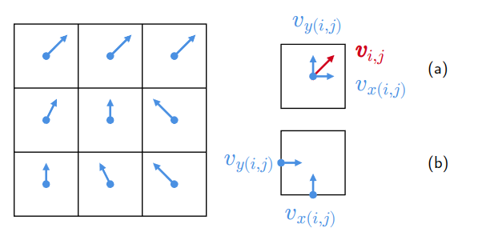

Fluid Simulation
Real-time Eulerian fluid simulation is a technique used to simulate the behavior of fluids, such as water or air, in a computer program. The simulation is based on the Eulerian approach, which means that the fluid is treated as a continuous substance, rather than a collection of discrete particles. The goal of real-time simulation is to produce results that can be displayed in real-time, meaning that the simulation can be run at the same speed as the frame rate of a display. This is important for applications such as video games or virtual reality, where the fluid must respond to user input or other changes in the environment in a timely manner. Real-time Eulerian fluid simulation involves solving complex mathematical equations that describe the behavior of the fluid, such as the Navier-Stokes equations, using a variety of numerical techniques.
Here, we'll use assumptions to make the model simpler
Vector Field
When modelling a vector field, such as a fluid flow, it can be helpful to represent the field using a staggered grid.
In a staggered grid, the vector quantities (e.g. velocity) are not defined at the same points as the underlying grid points.
Instead, they are defined at "staggered" points that are offset from the grid points.
This can make the model simpler in a number of ways.
For example, it can allow the model to more accurately capture the behavior of the field near boundaries or interfaces, as the vectors are not required to be continuous across these boundaries.
Additionally, using a staggered grid can reduce the number of calculations needed to solve the model, as the number of vectors that interact with a single cell is fewer.
This can make the model more efficient and easier to solve.

Variables
class FluidSimulator {
constructor(density, nx, ny, h, dt, n_iter, over_relaxation) {
this.density = density;
this.nx = nx ;
this.ny = ny ;
this.h = h;
this.dt = dt;
var n = this.nx * this.ny;
// vector field
this.Vx = new Float32Array(n);
this.Vy = new Float32Array(n);
// scalar fields
this.P = new Float32Array(n); //pressure
this.S = new Float32Array(n); //object 0 : solid obstacle, 1 : none
this.Dye = new Float32Array(n); //dye 0 : filled , 1 : none
this.S.fill(1.0)
this.Dye.fill(1.0)
this.Vxnew = new Float32Array(n);
this.Vynew = new Float32Array(n);
this.Dyenew = new Float32Array(n);
// parameter for SOR solver
this.n_iter = n_iter;
this.over_relaxation = over_relaxation;
}
Using a 1D Float32Array can be faster than using a 2D array in some cases because it requires less memory and can be more efficiently processed by the computer. A 1D Float32Array is a linear, contiguous block of memory that stores a single-dimensional array of 32-bit floating point values. In contrast, a 2D array is an array of arrays, with each element in the outer array being another array. This requires more memory to store, as it requires an additional level of indirection to access the elements. Additionally, the computer may have to perform more operations to access the elements of a 2D array, as it must first locate the correct inner array and then access the element within that array. In contrast, a 1D Float32Array can be accessed more efficiently, as all of the elements are stored in a contiguous block of memory and can be accessed directly. As a result, using a 1D Float32Array can be faster in some cases, especially when working with large arrays or when performance is critical.
Divergence
In an incompressible fluid, the divergence of the flow velocity is always 0
$$\nabla\cdot{\bf V} = 0$$
Divergence measures the net outflow of a vector field. In a discrete case, we can think of it as
$$\nabla\cdot{\bf V} = \sum v_\text{out} - \sum v_\text{in}$$

Based on the diagram, we can calculate the divergence of the flow velocity in the cell (i,j) using:
$$\nabla\cdot{\bf V} = v_{x(i+1,j)} - v_{x(i,j)} + v_{y(i,j+1)} - v_{y(i,j)}$$
To ensure the divergence in the cell is 0, we need to modify the velocity of each cell. You can think of this as the force that keeps the fluid incompressible. Some sources call this process `diffusion`, but here, we'll just call it `solveDivergence`. The modified value of \({\bf V}\) can be calculated using numerical method such as Gauss-Seidel method.
We want to find the value of \(v_x\) and \(v_y\) such that the divergence is 0.
$$0 = v_{x(i+1,j)} - v_{x(i,j)} + v_{y(i,j+1)} - v_{y(i,j)}$$
Using gauss-seidel method, we can iterate using the following formula
$$v_{x(i,j)}^{(k+1)} = v_{x(i,j)}^{(k)}
+ \frac14\left(v_{x(i+1,j)}^{(k)} - v_{x(i,j)}^{(k)} + v_{y(i,j+1)}^{(k)} - v_{y(i,j)}^{(k)}\right)
= v_{x(i,j)}^{(k)} + \frac14(\nabla\cdot{\bf V})_{i,j}^{(k)}
$$
same method is applied for the other points.
function solveDivergence() {
var nx = this.nx;
for (var k = 0; k < this.n_iter; k++) {
for (var i = 1; i < this.nx-1; i++) { for (var j = 1; j < this.ny-1; j++) {
var div = (this.Vx[i+1 + nx*j] - this.Vx[i + nx*j] +
this.Vy[i + nx*(j+1)] - this.Vy[i + nx*j]);
this.Vx[i + nx*j ] += div / 4;
this.Vx[i+1 + nx*j ] -= div / 4;
this.Vy[i + nx*j ] += div / 4;
this.Vy[i + nx*(j+1)] -= div / 4;
} }
}
}
You can measure the accuracy of the run by looking up the value of `div`, the colser it is to 0, the better the simulation is. If the value for `div` is too big, you can increase the value of `n_iter` to make it more accurate.
Obstacle
In fluid simulation, it is often necessary to model obstacles or boundaries within the flow.
This is because real-world fluids often encounter obstacles or boundaries that can affect their flow pattern and behavior.
For example, a fluid may flow around a solid object, or it may be contained within a closed container.
Modelling these obstacles or boundaries allows the simulation to more accurately represent the real-world behavior of the fluid and to predict how it will flow and interact with the environment.
In addition, modelling obstacles can also help to improve the realism of the simulation, as it allows the simulation to account for the presence of solid objects and the effects they have on the flow.
In this fluid simulation model, the presence of an obstacle is stored in the variable \(S = [s_{ij}]\). Here, we use \(s = 0\) to indicate that there is a solid obstacle, and \(s = 1\) if there is none. Yes, we can use boolean array for \(S\) to indicate the position of the obstacle, but, by using floating point value between \(0.0\) and \(1.0\), we get the ability to model a non-solid obstacle that can pass trough portion of the fluid interacting with it.
Accounting the existence of the obstacles, we need to tweak the `solveDivergence` function that we have before.
If there is an obstacle in a grid, the velocity touching that grid is always \(0\).
In a cell that neighbors obstacle cells, the velocity from those cell will not be considered when calculating divergence.
Here, the obstacle is
Dye
One way to visualize fluid flow is by using properties such as pressure or velocity, which can be used to show the flow pattern. However, this can be difficult to interpret. To make the flow easier to see, it is often useful to use a dye or tracer, which can be added to the fluid and will move with the flow. This allows the flow pattern to be more clearly visualized, as the movement of the dye or tracer is much easier to see than the fluid itself.
Pressure
Boundary
Advection